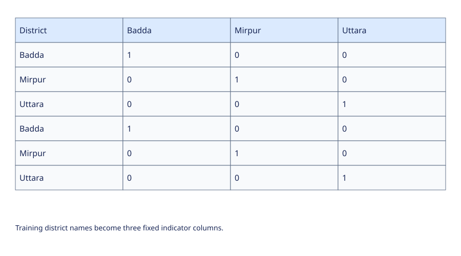
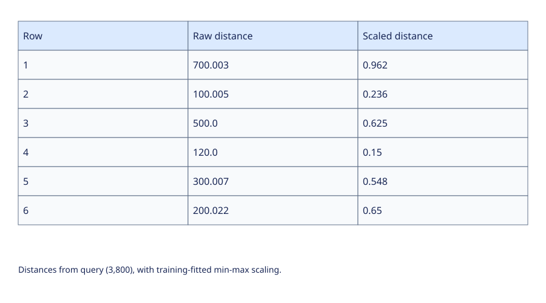
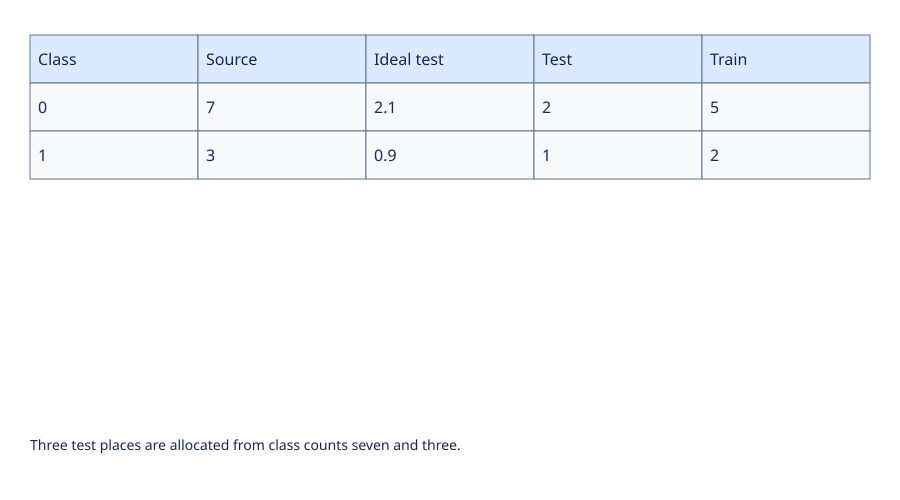
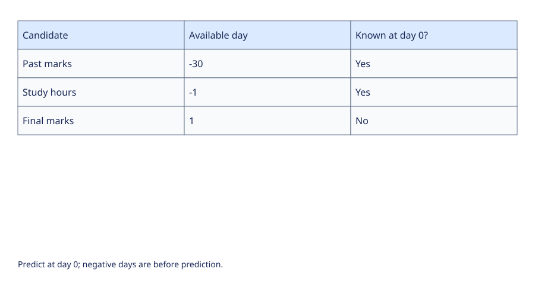

Mina gives Tuktuk a new notebook of fictional homes and students. Rafi asks for a prediction. Nana asks an earlier question: which entries can they trust? Mina brings four coloured pencils. She will mark unknown cells, names, scales and the boundary around the final test.
Allow 60–75 minutes. Bring paper, a pencil and a calculator. Try the picture and numerical questions before opening Python. Write a reason beside each preparation decision, including when you choose to leave a value unchanged.
The warm-ups match the first four quiz pictures. The numerical questions have worked answers in exam questions 1–6. Use the final section to decide which lesson to revisit.




Mark these with exam answers 1–6. Give yourself credit for the method only when the source of each fitted number is clear.
Quiz questions 11–15 contain complete programs. First predict their results on paper: gaps after a fixed fill, a mean that ignores a missing entry, an Uttara indicator vector, a future min-max value and complete rows after dropping gaps.
For the mean question, write the number of observed values before dividing. For the dropping question, cross out a row when either feature is absent. Explain why observed zero would survive both procedures.
Practice problem 1 fits a mean from training tokens and fills unknown future tokens. Keep the future value 100 from changing a training mean of 5. The all-missing training case must report UNDEFINED rather than borrowing information from the future.
Practice problem 2 encodes names with a fixed vocabulary and counts unknowns. Repeated unfamiliar names each produce a zero row and each contribute to the unknown count. They do not create extra columns.
After coding, explain a case where every observed value is zero. Zero is still a measurement. It must not be mistaken for the question-mark missing marker.
Answer written practice problems 3 and 4. Give a short preparation report for the shared study data, then discuss unequal attendance missingness among students with different travel circumstances.
Include field meanings, availability times, missingness, impossible hours, partition design and fitted transformations. Do not present invented course records as evidence about actual pupils. State which populations the table cannot represent.
Use exam questions 7–10 to explain leakage, constant-column correlation, plot choice and a fair evaluation design. A high average score does not establish equal performance for an absent group.
For each numerical answer, check the rule, substitution, arithmetic and interpretation. For a program, compare a normal case and an edge case. Keep a short note of the misconception you corrected before moving to regression.